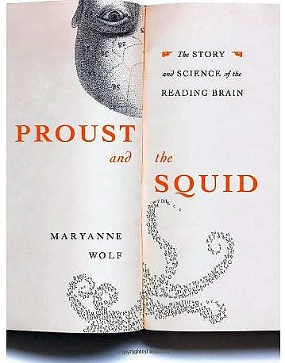
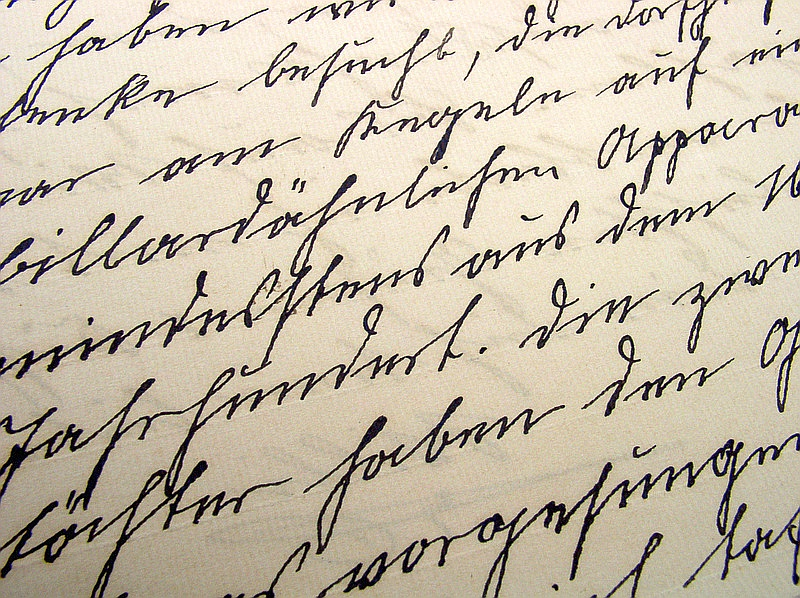
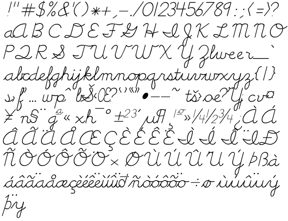
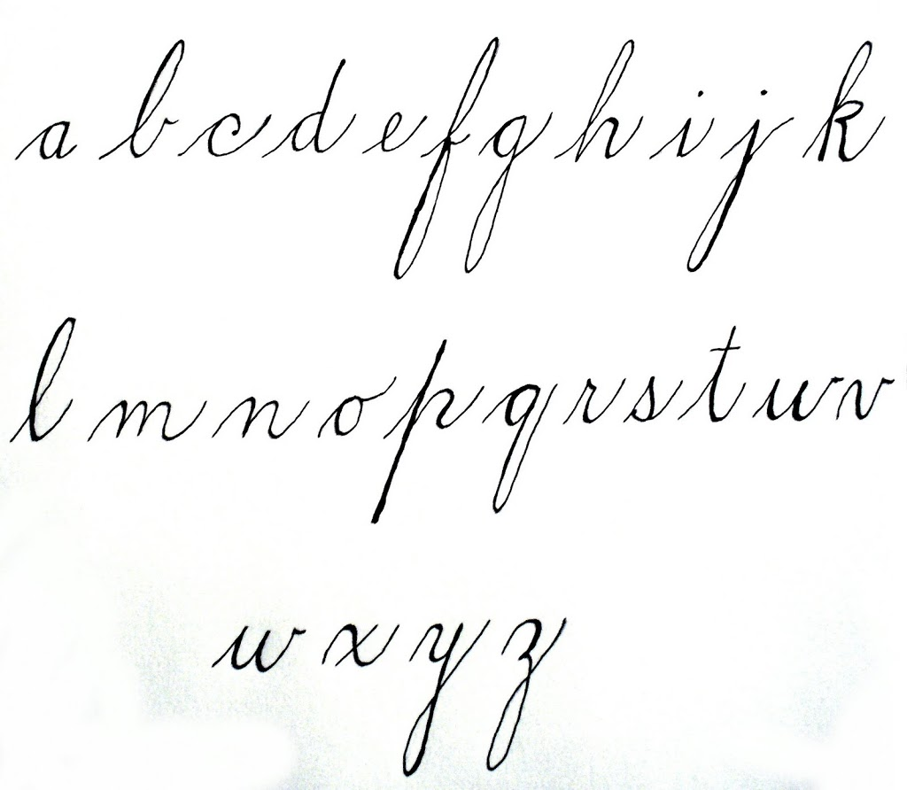
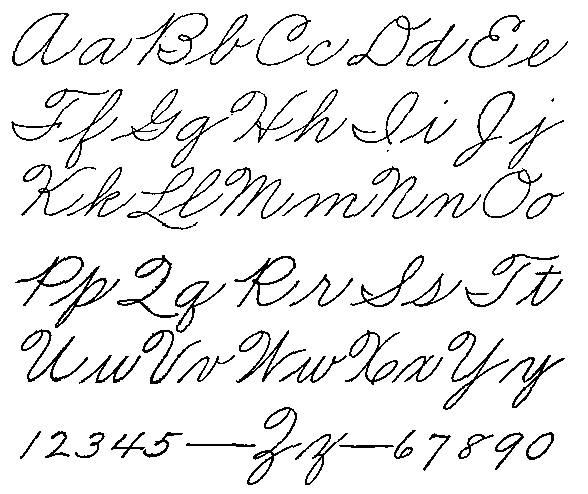
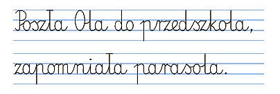
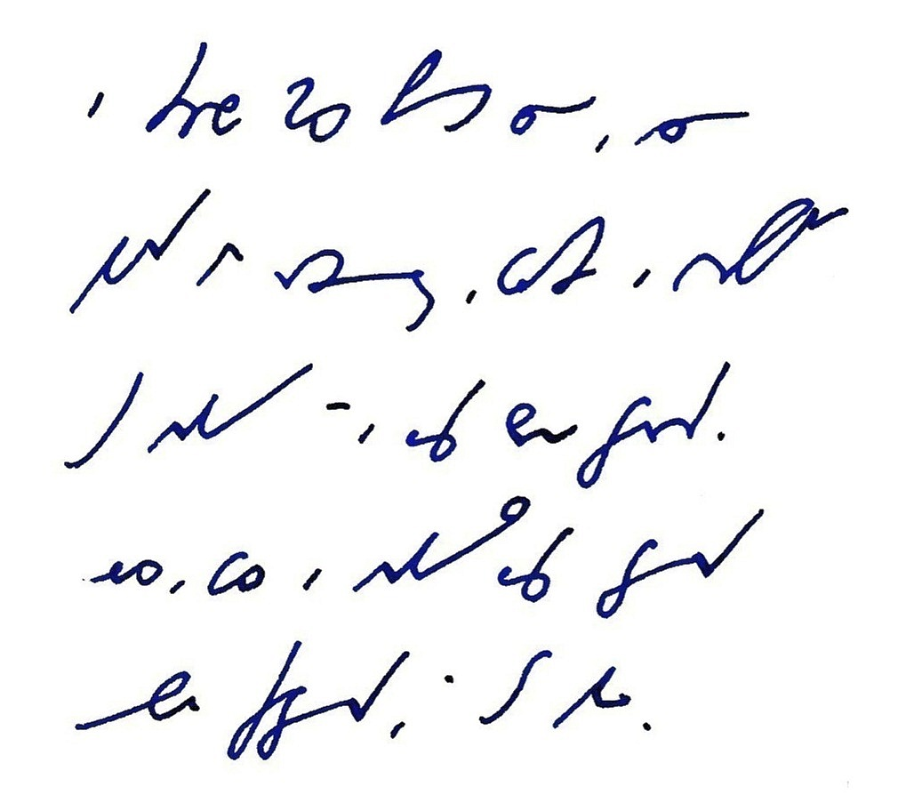

International
InternationalKoniec pisma
2012-04-25 | autor: flamenco108Dyskusja nad zakończeniem kariery pisma odręcznego w amerykańskich szkołach trwa. Pisałem już o tym wcześniej. O kwestii pisma odręcznego. Że aktywizuje nasze szare komórki w o wiele wyższym stopniu niż klepanina w klawirę. Dziś czytam artykuły przeciwniczki pisma odręcznego, Pani Anny Trubek - że to wręcz mózg zmienia!
Najsampierw przedstawię jej argumenty (pokrótce), ale nie będę się powstrzymywał od komentarzy. Otóż twierdzi ona, że pismo nie jest naszą przyrodzoną zdolnością, lecz wyuczoną - w końcu istnieje, wg danych archeolololologicznych zaledwie od 6000 lat, a nowoczesny człowiek (prawie) myślący od 200 tysięcy. Porównując te dwie liczby możemy zauważyć, że zdążyłby zawalić cywilizację techniczną co najmniej pięć razy od swego powstania do dzisiaj, gdyby był naprawdę myślący… Ale do rzeczy.
Otóż starożytni Sumerowie jako pierwsi zaczęli uczyć swoje dzieci wyciskać znaki klinowe - metoda powolna i mało efektowna, ale wtedy, jak wiadomo, ludzie mniej się spieszyli. W każdym razie dokonała się rewolucja w ich mózgach - zostały przystosowane nie tylko do pisania, czyli symbolicznego formułowania myśli, ale też do czytania, czyli translacji symboli na idee. Mózg został zmuszony do stałej, nieprzerwanej pracy translatorskiej. Zaczął się rozwijać na planie myślenia abstrakcyjnego.

Ale czym to się różniło od dzisiejszego pisania odręcznego, trudno powiedzieć, trzeba by dzieciaki znowu nauczyć pikać patykiem w miękkiej glinie…
Alfabety greckie, a wcześniej fenickie, jeszcze ten proces zintensyfikowały. Bo Egipcjanie i Chińczycy zostali przy symbolach ideograficznych, gdy tam powstały dźwiękonaśladowcze alfabety literowe - czyli myślenie skręciło od obrazowania do zapisywania dźwięków, jak na taśmie magnetofononononowej. Trudno ocenić, czy to lepiej, czy gorzej, korelacje między cywilizacją techniczną i pismem mogą być (i zapewne są) pozorne.
Nie są natomiast pozorne związki pomiędzy zmianami w kształcie liter i kwestiami religijnymi i ideololologicznymi. Mnisi średniowieczni stworzyli uncjałę, by odciąć się od pogańskiego i dekadenckiego starożytnego piśmiennictwa. Purytanie tworzyli własne czcionki (a zanim czcionki, to miedzioryty) i własne systemy pisma odręcznego różniące się w szczegółach, ale stanowiące ideolologiczną deklarację.
Ci sami mnisi narzekali na wynalazek prasy drukarskiej, która ich zdaniem miała zakończyć erę książki: unikalnego dzieła sztuki, napisanego bezbłędnie w skryptorium. Zamiast tego miały się pojawić obskurne, pełne błędów zecerskich pseudodzieła, obniżające ogólny poziom intelektualny, przeciwnie do zamierzeń.
Później umiejętności i talenty kaligraficzne stały się wyznacznikiem klasy osobniczej. Wielu uczyło się czytać, niewielu potrafiło pisać.

Po wojnie secesyjnej Remington dla utrzymania sprzedaży wyprodukował maszynę do pisania. Pomijając już jej funkcjonalność, biznes nie chciał jej kupować, bowiem… nie akceptował dokumentów nie napisanych odręcznie! Ale dopiero w 1890 roku maszyna do pisania dorobiła się powrotu karetki (czyli tego śśźźźźbrumg! i od nowego wiersza), czyli osiągnęła podstawową funkcjonalność. 15 lat później w USA bardziej dziwił brak maszyny do pisania w biurze, niż jej obecność.
Z niewiadomych powodów ludzie są strasznie przywiązani do pisma odręcznego, choć znaczna większość łapie za długopis już tylko w celu złożenia odręcznego podpisu na kwitach i umowach. Później albo w ogóle nic nie pisze (i nie czyta), albo klepie w klawisze. Jak ja teraz.
Pani Trubek jako argumentu używa przykładu swojego syna, który cierpi na dysgrafię, czy też dysleksję, a może lenistwo tylko i nie może się nauczyć pisać litery “G”, a im bardziej uczyciele go naciskają, tym dzieciak bardziej cierpi. I boi się pisać. Zmuszanie dzieci do pisania w kajetach to niepotrzebna brutalność, twierdzi p. Trubek, przedstawiająca się jako uniwersytecki wykładowca (czego?). Uważa, że do pisma jesteśmy przywiązani w sposób romantyczny, pismo rzekomo wyraża naszą osobowość, tożsamość.

Czy zaprzeczy ktoś, że tak jest? Ja nie mam zamiaru. Kartka pocztowa odręcznie napisana cieszy mnie stokroć bardziej niż tysiące emaili z najlepszymi życzeniami. Pismo odręczne wznosi komunikację na poziom osobisty. Korespondencja moich zmarłych Dziadków z ludźmi z całego świata jest ciepła, czuła i pełna ekspresji. Emaile nie zdejmują maski z naszych pokręconych emocji, pisane są na szybko, są często lakoniczne, pozbawione cech ludzkich - choć w wymianie informacji spisują się stokroć lepiej, przecież nie niosą ze sobą żadnych treści niewerbalnych. Emoty tego nie zastąpią.
Podobno w badaniach wyszło, że nauczyciele skłonni są przyznać lepsze stopnie za ładnie napisane wypracowanie, niż za ten sam tekst wklepany na klawiaturze.
Dalej Pani Trubek opowiada o mnichach średniowiecznych, o skryptoriach - że mianowicie tam uczono się pisać w sposób wystandaryzowany. I dalej tak było aż do w. XVIII, kiedy dopuszczono pewną indywidualizację charakteru pisma, zgodną z osobowością. Mogę tu dodać, że jestem posiadaczem kopii listów i książek z drugiej połowy wieku XIX. W porównaniu z dzisiejszymi bazgrołami pismo ówczesnych to szczyt standardu, zależnie od regionu świata może się różnią, ale niewiele. Precyzja do ułamka milimetra. A dopiero w XVIII wieku przyszło ludziom do głowy rozpocząć badania nad grafologią i grafopsychologią.

Wynalazek maszyny do pisania przyniósł ulgę dysgrafom. M.in. Herny Jamesowi, który zanim nie sprawił sobie klawiry, musiał dyktować swoje utwory sekretarce, co biło go po kieszeni. Tutaj Pani Trubek wskazuje na Heideggera jako winowajcę kontrreformacji pisma odręcznego - podobno bardzo chwalił. A tymczasem w szkołach uczono dzieci pisać pismem, które miało być możliwie podobne do liter z maszyny do pisania. Może w USA, u nasz nie pomnę.
Cóż, nie w piśmie odręcznym rzecz, sądzi Trubek, lecz w umiejętności wyrażania myśli. Są ludzie, którzy pisząc odręcznie trzy razy zapomną, co właściwie chcieli napisać, podczas gdy dyktując szybkopisarce znakomicie sobie poradzą. Chcemy więcej czasu na myślenie, mniej na pisanie, pisze Trubek. Tylko czy dowodzi to konieczności zakończenia nauki pisma odręcznego, czy może konieczności wprowadzenia stenografii i stenotypii w szkołach? Lepiej mieć przecież kilka rozmiarów śrubokręta w walizce z narzędziami, niż tylko jeden, prawda? Czy nie rozwija bardziej nauka kilku języków niż jednego? A czy nie jest tak samo z systemami zapisu? Dziś wiadomo, że nauka pisania, w jakikolwiek sposób, podobna jest do nauki języka-nie-tak-bardzo-obcego. Ortografia, interpunkcja nie istnieją w mowie. Wyłącznie w piśmie.

Pani Trubek wychwala bezwzrokowe klepanie w klawirę. Palce ustawione na klawiszach stukają omalże bez udziału świadomości, która może się skoncentrować na budowaniu treści. Muszę się z nią zgodzić. Ale czy nie było tak samo kiedyś, kiedy większość tekstów powstawała odręcznie? Gdy pisał Dickens, Updike, Mickiewicz, Słowacki, Steinbeck?
Pani Trubek przyznaje, że zaszły pewne zmiany w prozie (taki rodzaj literatury), które korelują z umasowieniem maszyn do pisania. Można sądzić, że komputery też takie zmiany powodują. Pani Trubek przyznaje, że przepisywanie na komputer odręcznych notatek babci, skrobanych na odwrotach kopert pocztowych przyniosło jej głębokie doświadczenie piszącej ręki. To właśnie mam na myśli mówiąc o osobistym poziomie pisma odręcznego. Ono przenosi treści niewerbalne. Nie wiem, jak to robi, ale robi.
Czy pismo odręczne odchodzi w przeszłość? Podobno przejście od heroldów do pisma zajęła Sumerom ponad półtora tysiąca lat. Grecy ze swoim alfabetem robili niewiele przez prawie pół tysiąclecia, zanim kultura przekazu ustnego została zastąpiona przez przekaz pisany. Zatem Trubek twierdzi, że jeszcze wiele mazutu Odrą popłynie, zanim pismo odręczne odejdzie w cień historii. Ale z pewnością odejdzie. Znaczy, tak ona myśli.

Ostatnie, nad czym rozwodzi się Pani Trubek, to systemy rozpoznawania mowy - że niby nie tylko zabiją pismo, ale też wyprą kiedyś przestarzałe klawiatury. Będziemy dyktować inteligentnym systemom eksperckim, które interpunkcję do tekstu wstawią na podstawie dogłębnej znajomości naszego głosu, intonacji, rozpoznania nastroju… Może, w niektórych zastosowaniach tak się stanie. Ale zwróćmy uwagę, że klawiatury dotychczas, mimo starań różnych wynalazców, nie wyparły pisma odręcznego z naszego życia: wszędzie oczekuje się naszych dziecinnie prostych do podrobienia podpisów, a to w bankach trzeba odręcznie (sic!!!) pisać oświadczenia i podania, a to znowuż akurat do pisania jest tylko długopis-reklamówka i serwetka z McDonalda, a to kurier UPS odbiera nasz podpis odręczny na służbowym kwitowniku elektronicznym… Klawiatury wzięły sobie część tortu, ale nie zabrały całego. Pismo albowiem, szanowni Państwo, zmusza nas do uporządkowania myśli, zanim wyrzygamy je z siebie. Mowa-trawa, pismo-grunt. Słowa mają skrzydła, łatwo wylatują, nieopatrznie wypowiedziane stają się źródłem kłopotów. Chcemy tego, żeby dokumenty o znaczeniu prawnym były opatrywane naszymi emocjami? Bo łatwo jest podyktować zjadliwą odpowiedź na złośliwy email od banku żądającego zapłaty zaległej raty. Kiedy musimy wklepać go (czy też napisać) samodzielnie, może w trakcie przyjdzie opamiętanie.

A podobno wystarczy jedna dobra burza słoneczna, żeby tą całą elektronikę szlag jasny trafił… Może jednak nie zapominajmy sztuki odręcznego pisania? A czytelników tej strony zachęcam do zachowania sztuki pisania skróconego, czyli stenografii.
2012-04-25 autor: flamenco108